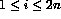
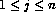
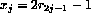
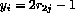
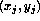
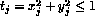
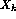
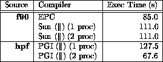
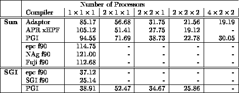
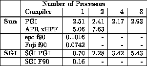

Impressive performances have been achieved for programs which contain algorithms that use `regular computations' such as Successive Over Relaxation methods. These codes are characterised by their simple regular communications patterns and by compile-time evaluation of array indices. The EP (Embarrassingly Parallel) and PDE1 benchmarks mentioned below are such programs.
Programs that employ `irregular computations' such as those which contain vector subscripted arrays or complex (non-linear) array element indexing perform badly. Other factors may slow down HPF codes such as excessive communications or excessive I/O. The FFT1 code, which forms part of the ParkBench suite, [2], is an example of a code that uses indirect addressing (vector subscripting).
The EP benchmark is one of the standard HPF (or parallel) benchmarks. It is characterised by being an algorithm that displays an embarrassingly large amount of parallelism! The calculations are performed on a 1D grid and many of the most frequently executed statements imply no or very little communications.
The EP benchmark provides an estimate of the upper achievable limit for floating point performance, ie, the performance without significant interprocessor communication. It is often used to demonstrate speedup over a number processors.
The first stage of the EP benchmark is to generate pseudo random numbers in the range (0,1) for  using the linear congruential generator:

Then for  we set  and  . This will mean that and are uniformly distributed in the range (-1,1). Next, for each pair  , we test  . If this test fails then the pair is rejected, otherwise we set
and
 and will be independent Gaussian deviates with mean zero and variance one. The benchmark counts the number of these deviates that lie in square annuli around the origin.
Most parallel systems are benchmarked with this software as the speedups look very impressive. It is probably the most often quoted benchmark and is invaluable as a comparison.
The version of ep run here uses the following values
M=23
N=10
Nq=10
and an array size of elements.
The ep benchmark should exhibit an almost linear speedup when executed over increasing number of processors.

Table 1: Execution of EP from NAS Benchmarks Suite on a 2-Processor
SPARCcenter 1000 (sun4d)
Another code with regular array access patterns is PDE1 again from the ParkBench suite. It is a Poisson partial differential equation solver which uses `red / black' relaxation with Chebyshev acceleration. The code contains a Successive Over-Relaxation kernel. The solution divides the mesh points into two groups depending on whether the sum of indices is odd (`red points') or even (`black points'). The method proceeds in half iterations during which time half of the points are adjusted (the red points). All of the red points can be updated in parallel as they are not interdependent. The next half iteration will update all the remaining (black) points in parallel. These calculations use the red points which were updated in the previous iteration. The problem is discretised using the ordinary 7 point difference stencil in a regular cubic grid. The value of the relaxation factor, the REAL valued variable FACTOR in the following code segment, is intended to changes at each half iteration but due to the large number of iterations the factor is actually allowed to remain constant. The kernel of the code is as follows:
!HPF$ ALIGN U(I,J,K) WITH *RED(I,J,K)
!HPF$ ALIGN F(I,J,K) WITH *RED(I,J,K)
!HPF$ DISTRIBUTE RED *(BLOCK,BLOCK,BLOCK) ONTO *FARM
! ....
DO NREL=1,ITER
WHERE(RED(2:NX-1,2:NY-1,2:NZ-1)) ! Do Red
U(2:NX-1,2:NY-1,2:NZ-1) =&
FACTOR*(HSQ*F(2:NX-1,2:NY-1,2:NZ-1)+&
U(1:NX-2,2:NY-1,2:NZ-1)+U(3:NX,2:NY-1,2:NZ-1)+&
U(2:NX-1,1:NY-2,2:NZ-1)+U(2:NX-1,3:NY,2:NZ-1)+&
U(2:NX-1,2:NY-1,1:NZ-2)+U(2:NX-1,2:NY-1,3:NZ))
ELSEWHERE ! Do Black
U(2:NX-1,2:NY-1,2:NZ-1) = &
FACTOR*(HSQ*F(2:NX-1,2:NY-1,2:NZ-1)+&
U(1:NX-2,2:NY-1,2:NZ-1)+U(3:NX,2:NY-1,2:NZ-1)+&
U(2:NX-1,1:NY-2,2:NZ-1)+U(2:NX-1,3:NY,2:NZ-1)+&
U(2:NX-1,2:NY-1,1:NZ-2)+U(2:NX-1,2:NY-1,3:NZ))
END WHERE
ENDDO
The 3D matrices should be mapped onto a 3D grid in such a way that two neighbouring cuboid blocks of array elements should be mapped onto neighbouring processors. It is clear from the code segment above that the calculations involve data exchange between neighbouring processors. It is also clear that the only appropriate distribution for this code is BLOCK. A simplistic HPF implementation would need to communicate the boundary elements twice per iteration (the updated red points at the ELSE WHERE statement and the updated black points at the END WHERE statement); a more advanced implementation would use overlap or stencil regions so that the communications need only occur once per iteration.
The 3D matrix is and is solved over 10 iterations.

Table 2: Execution of PDE1 over 1, 2, 4, 8 and 16 processors on a
Sun SPARCCentre 2000 and an SGI Power Challenge XL.
On the opposite side of the coin, HPF (v1) is poor at dealing with codes that generate irregular array references or array references that must be evaluated at run-time. Vector subscripting is one particularly tricky area. Consider the following assignment (V and W are indexing arrays):
A(V) = B(W)
The contents of the indexing arrays V and W are unknown at compile-time so at run-time the values are scrutinised. Copies of these indexing vectors must be circulated to all processors that own any parts of A and B and those processors must decide if they are to take part in the calculation and if they are then they must work out which processors own the elements that are needed and then must wait for these elements to be communicated. This whole process is further lengthened by the need for all processors to synchronise at various stages. There are many optimisations that can be made in order to speed this process up but current compilers are not sufficiently mature to implement them!
FFT1 from the ParkBench suite contains vector subscripting and therefore does not perform well.

Table 3: Execution of FFT1 over 1, 2, 4, 8 and 16 processors on a
SPARCCentre 2000 and Power Challenge XL.
More details can be found in the paper A Comparison of HPF Compilation Systems
There are also details about the available benchmarking software in Benchmarking Fortran 90 and HPF Compilation Systems